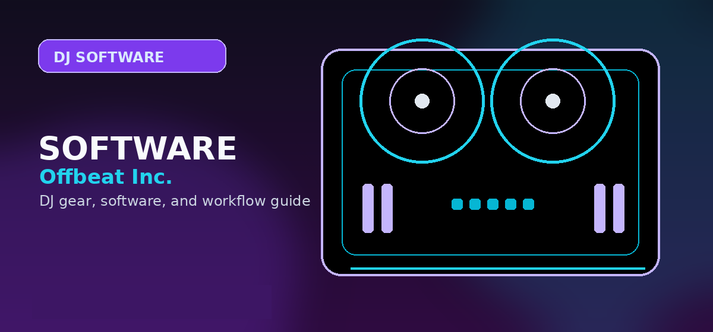

Serato DJ Pro
Serato supports 300+ controllers, more than any competitor in this comparison. The $119/yr subscription includes Stems and excellent DVS support.
- Best compatible software
- Strong DVS support
- Broad controller ecosystem
Which DJ software wins in 2026? Real-world latency tests, pricing, and hardware compatibility compared.

Three DJ software platforms dominate the market. We tested all three on identical hardware to compare latency, library management, and workflow.
Choose Serato DJ Pro for the broadest controller compatibility. Choose rekordbox for club preparation and Pioneer CDJ workflows. Choose Traktor Pro 4 for the strongest value and low one-time cost.
Serato supports 300+ controllers, more than any competitor in this comparison. The $119/yr subscription includes Stems and excellent DVS support.
rekordbox lets you prepare sets on a laptop, copy to USB, and play on club CDJs with a familiar Pioneer workflow.
Traktor at $99 one-time becomes cheaper than Serato after 10 months and measured the lowest latency in the source comparison.
Serato is strongest when broad hardware compatibility matters. rekordbox is strongest when the end goal is Pioneer club gear. Traktor is strongest when value and low-latency performance matter more than club-standard USB preparation.
| Software | Price/yr | Latency (128 buf) | Stems | Hardware Compat. |
|---|---|---|---|---|
| Serato DJ Pro | $119/yr | 4.2ms | Yes | 300+ controllers |
| rekordbox (Performance) | $192/yr | 5.8ms | Yes | Pioneer hardware only |
| Traktor Pro 4 | $99 one-time | 3.9ms | Yes | NI + others |
rekordbox's unique value is preparing a set on a laptop, copying it to USB, and playing it on compatible club CDJs. Serato is more flexible across controllers. Traktor is cost-effective and performance-focused.
Serato is the safest pick for broad controller support, rekordbox is the strongest for club USB preparation, and Traktor Pro 4 is the best value if your hardware works with it.
Most DJs do not need all three platforms. The practical choice is the one that makes your controller, library, and performance environment easier to manage. Serato fits controller-first performance and open-format work. rekordbox fits AlphaTheta/Pioneer DJ continuity and club preparation. Traktor fits DJs who want deeper effects, remix-style performance, and Native Instruments workflows.
For a beginner with no hardware yet, start by choosing the controller family you are most likely to buy. A DDJ-FLX4 keeps rekordbox and Serato paths open. A Traktor-focused setup makes more sense if you specifically want the Native Instruments approach to effects, stems, and remix tools. A RANE or REV-style setup points naturally toward Serato.
The biggest mistake is choosing software based only on a popular DJ’s setup. Pick based on the venues you expect to play, the hardware you can afford, and the library workflow you will maintain every week.
Before changing gear, software, or workflow, connect the recommendation to an actual use case: home practice, recorded mixes, streaming, mobile events, club preparation, or production crossover. A choice that looks best on paper can still be wrong if it adds setup friction or does not match the way you will play.
The safest workflow is to test the setup exactly as you will use it, then document the cable path, software version, library source, and backup plan. That prevents most of the avoidable failures that happen when DJs buy the right-looking tool but never validate the whole system.
Use these official pages to confirm current specifications, software compatibility, and support details before buying.
Serato DJ Pro has the broadest compatibility in this comparison, with support for 300+ controllers.
rekordbox is best for preparing sets that will be exported to USB and played on Pioneer CDJ hardware.
Traktor Pro 4 is the best value in this comparison because it is listed as a $99 one-time purchase.
Check controller compatibility, library tools, streaming support, stem features, recording limits, subscription cost, and whether the software matches the venues or hardware you expect to use.
Yes, but free versions often restrict hardware, recording, effects, or advanced library features. Use free software to learn basics, then upgrade when the limitations slow you down.